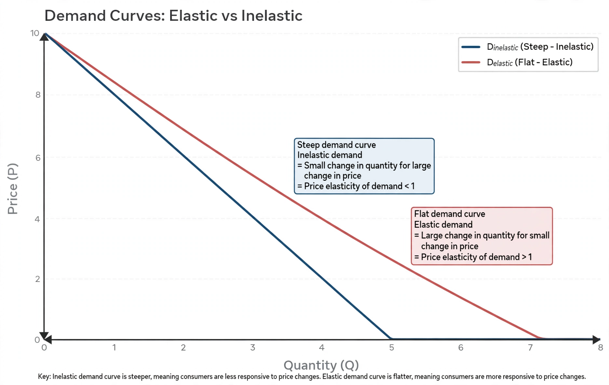

The price elasticity of demand is a measure used in economics to show the responsiveness, or elasticity, of the quantity demanded of a good or service to a change in its price when nothing else changes. More precisely, it gives the percentage change in quantity demanded in response to a one per cent change in price.

Ed = (% change in quantity demanded) / (% change in price)
A good is described as elastic when the absolute value of its elasticity exceeds 1 — quantity demanded responds more than proportionally to price — and inelastic when it is below 1. If elasticity is exactly 1, demand is unit elastic; if it is zero, demand is perfectly inelastic; if infinite, perfectly elastic.
When demand is elastic, a price cut increases total revenue, because the gain in quantity outweighs the lower price; when demand is inelastic, a price rise increases total revenue. The concept, developed by Alfred Marshall in his Principles of Economics (1890), is central to pricing, taxation analysis, and the study of tax incidence: the less elastic side of a market bears more of a tax.